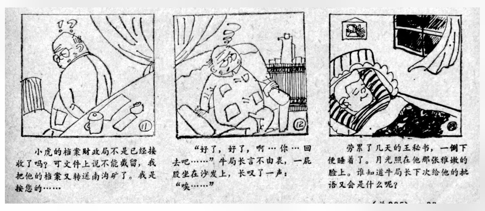

乃栋改编、绘画 《人事》1988年第5期（总第32期），第33页
秘书小王（续四）
Secretary Xiao Wang (continued, 4)
- Panel text
- 小虎的档案财政局不是已经接收了吗？可文件上说不能截留，我把他的档案又转送南沟矿了。我是按您的……
11. “Didn't the finance bureau already accept Xiao Hu's file? But the document says no one may be kept back, so I forwarded his file on to the Nangou mine. I was following your…” - “好了，好了，啊…你…回去吧……”牛局长言不由衷，一屁股坐在沙发上，长叹了一声：“唉……”
12. “All right, all right… you… you can go…” Bureau Chief Niu said, not meaning a word of it, and dropped onto the sofa with a long sigh: “Ai…” - 劳累了几天的王秘书，一倒下便睡着了。月光照在他那张稚嫩的脸上。谁知道牛局长下次给他的批语又会是什么呢？
13. Exhausted after several days' work, Secretary Wang fell asleep the moment he lay down. Moonlight fell on his young face. Who knows what Bureau Chief Niu's next written comment on him will say?
- 小虎的档案财政局不是已经接收了吗？可文件上说不能截留，我把他的档案又转送南沟矿了。我是按您的……
- Description
- Panels 11–13: Wang explains that, since the document forbids keeping graduates back, he forwarded Xiao Hu's file from the finance bureau to the Nangou mine; the chief sinks into his sofa with a sigh; Wang sleeps, wondering what the chief's next evaluation will say.
- Artist
- Nai Dong 乃栋 (adapted and drawn)
- Published in
- 《人事》1988年第5期（总第32期）, p. 33
- Themes
- Nepotism · Paperwork and documents · Picture stories (连环画)

Cite
Nai Dong, “秘书小王（续四）” [Secretary Xiao Wang (continued, 4)], Renshi (Personnel) 《人事》, 1988, no. 5, p. 33.